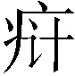

第四回 薄命女偏逢薄命郎 葫芦[1]僧乱判葫芦案〔一〕
却说黛玉同姊妹们至王夫人处，见王夫人〔二〕与兄嫂处的来使〔三〕计议家务，又说姨母家遭人命官司等语。因见王夫人事情冗杂，姊妹们遂出来，至寡嫂李氏房中来了。
原来这李氏即贾珠之妻。珠虽夭亡，幸存一子，取名贾兰，今方五岁，已入学攻书。这李氏亦系金陵名宦之女，父名李守中，曾为国子监祭酒[5]，族中男女无有不诵诗读书者。至李守中承继以来，便说“女子无才便有德”[6]，故生了李氏时，便不十分令其读书，只不过将些《女四书》《列女传》《贤媛集》[7]等三四种书，使他认得几个字，记得前朝这几个贤女便罢了，却只以纺绩井臼[8]为要，因取名为李纨，字宫裁。因此这李纨虽青春丧偶，居家处膏粱锦绣之中，竟如槁木死灰[9]一般，一概无见无闻，惟知侍亲养子，外则陪侍小姑等针黹[10]诵读而已。今黛玉虽客寄于斯，日有这般姐妹相伴，除老父外，馀者也都无庸虑及了。
如今且说雨村，因补授了应天府，一下马就有一件人命官司详[11]至案下，乃是两家争买一婢，各不相让，以至殴伤人命。彼时雨村即拘原告之人来审。那原告道：“被殴死者乃小人之主人。因那日买了一个丫头，不想是拐子拐来卖的。这拐子先已得了我家的银子，我家小爷原说第三日方是好日子，再接入门。这拐子便又悄悄的卖与薛家，被我们知道了，去找拿卖主，夺取丫头。无奈薛家原系金陵一霸，倚财仗势，众豪奴将我小主人竟打死了。凶身主仆已皆逃走，无影无踪，只剩了几个局外之人。小人告了一年的状，竟无人作主。望大老爷拘拿凶犯，剪恶除凶〔四〕，以救孤寡，死者感戴天恩不尽！”
雨村听了大怒道：“岂有这样放屁的事！打死人命就白白的走了，再拿不来的！”因发签[13]差公人立刻将凶犯族中人拿来拷问，令他们实供藏在何处；一面再动海捕文书[14]。正要〔五〕发签时，只见案边立的一个门子[16]使眼色儿，——不令他发签之意。雨村心下甚为疑怪，只得停了手，即时退堂，至密室，侍从皆退去，只留门子服侍。
这门子忙上来请安，笑问：“老爷一向加官进禄，八九年来就忘了我了？”雨村道：“却十分面善得紧，只是一时想不起来。”那门子笑道：“老爷真是贵人多忘事，把出身之地竟忘了。不记当年葫芦庙里之事？”雨村听了，如雷震一惊，方想起往事。原来这门子本是葫芦庙内一个小沙弥[17]，因被火之后，无处安身，欲投别庙去修行，又耐不得清凉景况，因想这件生意倒还轻省热闹，遂趁年纪小蓄了发，充了门子。雨村那里料得是他，便忙携手笑道：“原来是故人。”又让坐了好谈。这门子不敢坐。雨村笑道：“贫贱之交不可忘。你我故人也；二则此系私室，既欲长谈，岂有不坐之理？”这门子听说，方告了座，斜签着坐[18]了。
雨村因问方才何故有不令发签之意。这门子道：“老爷既荣任到这一省，难道就没抄一张本省‘护官符’来不成？”雨村忙问：“何为‘护官符’？我竟不知。”门子道：“这还了得！连这个不知，怎能作得长远！如今凡作地方官者，皆有一个私单，上面写的是本省最有权有势、极富极贵的大乡绅名姓，各省皆然；倘若不知，一时触犯了这样的人家，不但官爵不保，只怕连性命还保不成呢！所以绰号叫作‘护官符’。方才所说的这薛家，老爷如何惹得他！他这件官司并无难断之处，皆因都碍着情分面上，所以如此。”一面说，一面从顺袋[19]中取出一张抄写的“护官符”来，递与雨村，看时，上面皆是本地大族名宦之家的谚俗口碑[20]。其口碑排写得明白，下面所注的皆是自始祖官爵并房次。石头亦曾抄写了一张，今据石上所抄云〔六〕：
贾不假，白玉为堂金作马。
宁国荣国二公之后，共二十房分，除宁荣亲派八房在都外，现原籍住者十二房。[22]
阿房宫，三百里，住不下金陵一个史。
保龄侯尚书令史公之后，房分共十八，都中现住者十房，原籍现居八房。[23]
东海缺少白玉床，龙王来请金陵王。
都太尉统制县伯王公之后，共十二房，都中二房，馀在籍。[24]
丰年好大雪，珍珠如土金如铁。
紫薇舍人薛公之后，现领内府帑银行商，共八房分。[25]
雨村犹未看完，忽听传点[26]，人报：“王老爷来拜。”雨村忙具衣冠出去迎接。有顿饭工夫，方回来细问。这门子道：“这四家皆连络有亲，一损皆损，一荣皆荣，扶持遮饰，俱有照应的。今告打死人之薛，就系丰年大雪之‘雪’。也不单靠这三家，他的世交亲友在都在外者，本亦不少。老爷如今拿谁去？”雨村听如此说，便笑问门子道：“如你这样说来，却怎么了结此案？你大约也深知这凶犯躲的方向了？”
门子笑道：“不瞒老爷说，不但这凶犯躲的方向我知道，一并这拐卖之人我也知道，死鬼买主也深知道。待我细说与老爷听：这个被打之死鬼，乃是本地一个小乡绅之子，名唤冯渊〔七〕，自幼父母早亡，又无兄弟，只他一个人守着些薄产过日子。长到十八九岁上，酷爱男风[28]，最厌女子。这也是前生冤孽，可巧遇见这拐子卖丫头，他便一眼看上了这丫头，立意买来作妾，立誓再不交结男子，也不再娶第二个了，所以郑重其事，必待三日后方过门。谁晓这拐子又偷卖与薛家，他意欲卷了两家的银子，再逃往他省。谁知又不曾走脱，两家拿住，打了个臭死，都不肯收银，只要领人。那薛家公子岂是让人的，便喝着手下人一打，将冯公子打了个稀烂，抬回家去三日死了。这薛公子原是早已择定日子上京去的，头起身两日前，就偶然遇见这丫头，意欲买了就进京的，谁知闹出这事来。既打了冯公子，夺了丫头，他便没事人一般，只管带了家眷走他的路。他这里自有弟兄奴仆在此料理，也并非为此些些小事值得他一逃走的。这且别说，老爷你当被卖之丫头是谁？”雨村道：“我如何得知。”门子冷笑道：“这人算来还是老爷的大恩人呢！他就是葫芦庙旁住的甄老爷的小姐，名唤英莲的。”雨村罕然道：“原来就是他！闻得养至五岁被人拐去，却如今才来卖呢？”
门子道：“这一种拐子单管偷拐五六岁的儿女，养在一个僻静之处，到十一二岁，度其容貌，带至他乡转卖。当日这英莲，我们天天哄他顽耍；虽隔了七八年，如今十二三岁的光景，其模样虽然出脱得齐整好些，然大概相貌，自是不改，熟人易认。况且他眉心中原有米粒大小的一点胭脂

[29]，从胎里带来的，所以我却认得。偏生这拐子又租了我的房舍居住，那日拐子不在家，我也曾问他。他是被拐子打怕了的，万不敢说，只说拐子系他亲爹，因无钱偿债，故卖他。我又哄之再四，他又哭了，只说‘我不记得小时之事！’这可无疑了。那日冯公子相看了，兑了银子，拐子醉了，他自叹道：‘我今日罪孽可满了！’后又听见冯公子令三日之后过门，他又转有忧愁之态。我又不忍其形景，等拐子出去，又命内人去解释他：‘这冯公子必待好日期来接，可知必不以丫鬟相看。况他是个绝风流人品，家里颇过得，素习又最厌恶堂客[30]，今竟破价买你，后事不言可知。只耐得三两日，何必忧闷！’他听如此说，方才略解忧闷，自为从此得所。谁料天下竟有这等不如意事，第二日，他偏又卖与薛家。若卖与第二个人还好，这薛公子的混名人称‘呆霸王’，最是天下第一个弄性尚气的人，而且使钱如土，遂打了个落花流水，生拖死拽，把个英莲拖去，如今也不知死活。这冯公子空喜一场，一念未遂，反花了钱，送了命，岂不可叹！”雨村听了，亦叹道：“这也是他们的孽障[31]遭遇，亦非偶然。不然这冯渊如何偏只看准了这英莲？这英莲受〔八〕了拐子这几年折磨，才得了个头路，且又是个多情的，若能聚合了，倒是件美事，偏又生出这段事来。这薛家纵比冯家富贵，想其为人，自然姬妾众多，淫佚无度，未必及冯渊定情于一人者。这正是梦幻情缘，恰遇一对薄命儿女。且不要议论他，只目今这官司，如何剖断才好？”门子笑道：“老爷当年何其明决，今日何反成了个没主意的人了！小的闻得老爷补升此任，亦系贾府王府之力；此薛蟠即贾府之亲，老爷何不顺水行舟，作个整人情，将此案了结，日后也好去见贾府王府。”雨村道：“你说的何尝不是。但事关人命，蒙皇上隆恩，起复委用，实是重生再造，正当殚心竭力图报之时，岂可因私而废法？是我实不能忍为者。”门子听了，冷笑道：“老爷说的何尝不是大道理，但只是如今世上是行不去的。岂不闻古人有云：‘大丈夫相时而动[33]’，又曰：‘趋吉避凶者为君子’。依老爷这一说，不但不能报效朝廷，亦且自身不保，还要三思为妥。”
雨村低了半日头，方说道：“依你怎么样？”门子道：“小人已想了一个极好的主意在此：老爷明日坐堂，只管虚张声势，动文书发签拿人。原凶自然是拿不来的，原告固是定要将薛家族中及奴仆人等拿几个来拷问。小的在暗中调停，令他们报个暴病身亡，令族中及地方上共递一张保呈，老爷只说善能扶鸾[34]请仙，堂上设下乩坛，令军民人等只管来看。老爷就说〔九〕：‘乩仙批了，死者冯渊与薛蟠原因夙孽相逢，今狭路既遇，原应了结。薛蟠今已得了无名之病，被冯魂追索已死。其祸皆因拐子某人而起，拐之人原系某乡某姓人氏，按法处治，馀不略及’等语。小人暗中嘱托拐子，令其实招。众人见乩仙批语与拐子相符，馀者自然也都不虚了。薛家有的是钱，老爷断一千也可，五百也可，与冯家作烧埋之费。那冯家也无甚要紧的人，不过为的是钱，见有了这个银子，想来也就无话了。老爷细想此计如何？”雨村笑道：“不妥，不妥。等我再斟酌斟酌，或可压服口声[36]。”二人计议，天色已晚，别无话说。
至次日坐堂，勾取一应有名人犯，雨村详加审问，果见冯家人口稀疏，不过赖此欲多得些烧埋之费；薛家仗势倚情，偏不相让，故致颠倒未决。雨村便徇情枉法，胡乱判断了此案。冯家得了许多烧埋银子，也就无甚话说了。
雨村断了此案，急忙作书信二封，与贾政并京营节度使[37]王子腾，不过说“令甥之事已完，不必过虑”等语。此事皆由葫芦庙内之沙弥新门子所出，雨村又恐他对人说出当日贫贱时的事来，因此心中大不乐意，后来到底寻了个不是，远远的充发[38]了他才罢〔一○〕。
当下言不着雨村。且说那买了英莲打死冯渊的薛公子，亦系金陵人氏，本是书香继世之家。只是如今这薛公子幼年丧父，寡母又怜他是个独根孤种，未免溺爱纵容，遂至老大无成；且家中有百万之富，现领着内帑钱粮，采办杂料。
这薛公子学名薛蟠，字表文起〔一一〕，今年方十有五岁，〔一二〕性情奢侈，言语傲慢。虽也上过学，不过〔一三〕略识几字，终日惟有斗鸡走马[43]，游山玩水而已。虽是皇商[44]，一应经济世事，全然不知，不过赖祖父之旧情分，户部挂虚名，支领钱粮，其馀事体，自有伙计老家人等措办。寡母王氏乃现任京营节度使王子腾之妹，与荣国府贾政的夫人王氏，是一母所生的姊妹，今年方四十上下年纪，只有薛蟠一子。还有一女，比薛蟠小两岁，乳名宝钗，生得肌骨莹润，举止娴雅。当日有他父亲在日，酷爱此女，令其读书识字，较之乃兄竟高过十倍。自父亲死后，见哥哥不能依贴母怀，他便不以书字为事，只留心针黹家计等事，好为母亲分忧解劳。
近因今上[45]崇诗尚礼，征采才能，降不世出之隆恩[46]，除聘选妃嫔外，凡仕宦名家之女，皆亲送〔一四〕名达部，以备选为公主郡主[48]入学陪侍，充为才人赞善[49]之职。二则自薛蟠父亲死后，各省中所有的买卖承局、总管、伙计人等，见薛蟠年轻不谙世事，便趁时拐骗起来，京都中几处生意，渐亦消耗。薛蟠素闻得都中乃第一繁华之地，正思一游，便趁此机会，一为送妹待选，二为望亲，三因亲自入部销算旧帐，再计新支，——其实则为游览上国[50]风光之意。因此早已打点下行装细软，以及馈送亲友各色土物人情等类，正择日己〔一五〕定起身，不想偏遇见了拐子重卖英莲。薛蟠见英莲生得不俗，立意买他，又遇冯家来夺人，因恃强喝令手下豪奴将冯渊打死。他便将家中事务一一的嘱托了族中人并几个老家人，他便带了母妹竟自起身长行去了。人命官司一事，他竟视为儿戏，自为花上几个臭钱，没有不了的。
在路不记其日。那日已将入都时，却又闻得母舅王子腾升了九省统制[52]，奉旨出都查边。薛蟠心中暗喜道：“我正愁进京去有个嫡亲的〔一六〕母舅管辖着，不能任意挥霍挥霍；偏如今又升出去了，可知天从人愿。”因和母亲商议道：“咱们京中虽有几处房舍，只是这十来年没人进京居住，那看守的人未免偷着租赁与人，须得先着几个人去打扫收拾才好。”他母亲道：“何必如此招摇！咱们这一进京，原该先拜望亲友，或是在你舅舅家，或是你姨爹家。他两家的房舍极是便宜的，咱们先能着[54]住下，再慢慢的着人去收拾，岂不消停[55]些。”薛蟠道：“如今舅舅正升了外省去，家里自然忙乱起身，咱们这工夫一窝一拖的奔了去，岂不没眼色[56]。”他母亲道：“你舅舅家虽升了去，还有你姨爹家。况这几年来，你舅舅姨娘两处，每每带信捎书，接咱们来。如今既来了，你舅舅虽忙着起身，你贾家姨娘未必不苦留我们。咱们且忙忙收拾房屋，岂不使人见怪？你的意思我却知道，守着舅舅姨爹住着，未免拘紧了你，不如你各自住着，好任意施为。你既如此，你自去挑所宅子去住。我和你姨娘，——姊妹们别了这几年，却要厮守几日。我带了你妹子投你姨娘家去，你道好不好？”薛蟠见母亲如此说，情知扭不过的，只得吩咐人夫一路奔荣国府来。
那时王夫人已知薛蟠官司一事，亏贾雨村维持了结，才放了心。又见哥哥升了边缺，正愁又少了娘家的亲戚来往，略加寂寞。过了几日，忽家人传报：“姨太太带了哥儿姐儿，合家进京，正在门外下车。”喜的王夫人忙带了女媳人等，接出大厅，将薛姨妈等接了进去。姊妹们暮年相会，自不必说悲喜交集，泣笑叙阔一番。忙又引了拜见贾母，将人情土物各种酬献了。合家俱厮见过，忙又治席接风。
薛蟠已拜见过贾政，贾琏又引着拜见了贾赦、贾珍等。贾政便使人上来对王夫人说：“姨太太已有了春秋[57]，外甥年轻不知世路，在外住着恐有人生事。咱们东北角上梨香院一所十来间房，白空闲着，打扫了，请姨太太和姐儿哥儿住了甚好。”王夫人未及留，贾母也就遣人来说“请姨太太就在这里住下，大家亲密些”等语。薛姨妈正要同居一处，方可拘紧些儿子；若另住在外，又恐他纵性惹祸，遂忙道谢应允。又私与王夫人说明：“一应日费供给一概免却，方是处常之法。”王夫人知他家不难于此，遂亦从其愿。从此后薛家母子就在梨香院住了。
原来这梨香院即当日荣公暮年养静之所，小小巧巧，约有十馀间房屋，前厅后舍俱全。另有一门通街，薛蟠家人就走此门出入。西南有一角门，通一夹道，出夹道便是王夫人正房的东边了。每日或饭后，或晚间，薛姨妈便过来，或与贾母闲谈，或与王夫人相叙。宝钗〔一七〕日与黛玉迎春姊妹等一处，或看书下棋，或作针黹，倒也十分乐业。
只是薛蟠起初之心，原不欲在贾宅居住者，但恐姨父管约拘禁，料必不自在的；无奈母亲执意在此，且宅中又十分殷勤苦留，只得暂且住下，一面使人打扫出自己的房屋，再移居过去的。谁知自从在此住了不上一月的光景，贾宅族中凡有的子侄，俱已认熟了一半，凡是那些纨 气习者，莫不喜与他来往，今日会酒，明日观花，甚至聚赌嫖娼，渐渐无所不至，引诱的薛蟠比当日更坏了十倍。虽然贾政训子有方，治家有法，一则族大人多，照管不到这些；二则现任族长乃是贾珍，彼乃宁府长孙，又现袭职，凡族中事，自有他掌管；三则公私冗杂，且素性潇洒，不以俗务为要，每公暇之时，不过看书着棋而已，馀事多不介意。况且这梨香院相隔两层房舍，又有街门另开，任意可以出入，所以这些子弟们竟可以放意畅怀的闹〔一八〕，因此遂将移居之念渐渐打灭了。
气习者，莫不喜与他来往，今日会酒，明日观花，甚至聚赌嫖娼，渐渐无所不至，引诱的薛蟠比当日更坏了十倍。虽然贾政训子有方，治家有法，一则族大人多，照管不到这些；二则现任族长乃是贾珍，彼乃宁府长孙，又现袭职，凡族中事，自有他掌管；三则公私冗杂，且素性潇洒，不以俗务为要，每公暇之时，不过看书着棋而已，馀事多不介意。况且这梨香院相隔两层房舍，又有街门另开，任意可以出入，所以这些子弟们竟可以放意畅怀的闹〔一八〕，因此遂将移居之念渐渐打灭了。
[1] 葫芦——“糊涂”的谐音。“葫芦案”即“糊涂案”。宋元时民间俗语有“葫芦提”一词，意思是糊里糊涂，不明不白。这里语意双关，既寓葫芦僧原住的葫芦庙，又含“糊涂”之意，隐喻后文“胡乱判断了此案”。
〔一〕 此回梦稿本回前诗作：“题曰：捐躯报国恩，未报身犹在。眼底物多情，君恩或可待。”俄藏、卞藏本回前诗“身犹在”作“躯犹在”，馀同梦稿本。
〔二〕 “王夫人处见”，原无，从各本补。
〔三〕 “的来使”，原作“来时便”，俄藏本作“处来人”，卞藏本作“的来人”。从己卯、梦稿、甲戌、甲辰、舒序本改。
[5] 国子监祭酒——是国子监的主管官，封建时代的最高学官。国子监：封建王朝的最高学府，简称“国学”，始建于西晋，称国子学，隋唐改称国子监，后代因之，清末始废。祭酒：古代举行盛大宴会时，必推举宾客中一位长者先举酒以祭，叫祭酒，后来衍为学官名。
[6] 女子无才便有德——原作“女子无才便是德”。见清代石成金《家训钞》引明人陈眉公语。
[7] 《女四书》、《列女传》、《贤媛集》——《女四书》：明代王相仿朱熹编《四书》的办法，把东汉班昭的《女诫》、唐代宋若莘、宋若昭的《女论语》、明代永乐皇后徐氏的《内训》和王相母刘氏的《女范捷录》编辑为一书，并加注，总名为《女四书》。《列女传》：西汉刘向编。《贤媛集》：未详。《世说新语》第十九篇为《贤媛》，或即所指。
[8] 井臼（jiù旧）——指汲水、舂米等劳作。这里泛指家务事。
[9] 槁木死灰——这里喻情性欲望已归寂灭。
[10] 针黹（zhǐ旨）——旧时妇女针线活儿的统称。也叫“女红（ɡōn工）”。黹：缝纫，刺绣。
[11] 详——旧时下属向上司呈报请示的一种公文。这里是动词，作“上报”解。
〔四〕 “剪恶除凶”，原无，从己卯、梦稿、甲戌、蒙府、戚序、舒序、俄藏、卞藏本补。
[13] 发签——签：封建官府差役外出办事的凭证，一般系木制，长条形，插在公案签筒中，用时取出，称“发签”。
[14] 海捕文书——封建时代官府通令各地捕拿逃犯的公文，即后来的通缉令。
〔五〕 “正要”，底本、俄藏、卞藏本作“未”，从蒙府、戚序本改。
[16] 门子——旧时官衙中从事看门、传达、站班等杂务的差役。
[17] 沙弥——梵语音译之略，意为“息恶”“行慈”。凡男子初出家受十戒者通称沙弥，俗多以称呼年幼的小和尚。
[18] 斜签着坐——侧身直腰坐在凳子边沿，表示谦恭。
[19] 顺袋——衣服小襟上的口袋，右手顺襟便可探得。一说为系在腰间的竖向小袋。
[20] 口碑——《五灯会元》：“劝君不用镌顽石，路上行人口似碑。”比喻人们口头上所传诵的，如同刻在石碑上一样不可磨灭。
〔六〕 “护官符”小注，原阙，各本均有，唯文字少异。己卯本正文亦无，但其卷首另有带注夹条。此从甲戌本补。
[22] “贾不假”句及注——此句极言贾府的尊贵豪富。白玉为堂金作马：汉乐府《相逢行》：“黄金为君门，白玉为君堂。”房分：家族的一支叫“一房”。
[23] “阿房（ē pán痾旁）宫”句及注——此句形容史府的门第显赫。《三辅黄图》：“秦惠文王造阿房宫，未成，始皇广其宫，规恢三百余里，阁道通骊山。”尚书令：秦代始置，权限历代有异，秦时掌章奏文书，东汉时为总理政事，魏晋时事实上即为宰相。明清时废。
[24] “东海缺少白玉床”句及注——此句极言王家多奇珍异宝。传说四海龙王极富有，尤以东海龙王为最。太尉：古官名。秦汉为全国军事首脑，“三公”之一；后渐变为加官，无实权；至宋徽宗时，成为武官最高官阶；元以后废。统制：北宋所置官名，可节制兵马，南宋后成为禁军将官职衔。
[25] “丰年好大雪”句及注——此句极言薛家钱财之多。雪：谐音“薛”。紫薇舍人，即中书舍人，为撰拟诰敕之专官，以有文学资望者充任。唐开元年间曾改中书省为紫薇省。帑（tǎn倘）银：国库所藏之钱财。
[26] 传点——封建时代的官署或大官僚的私邸，二门旁常设有一种金属的响器叫“点”，击之报时或集众叫“传点”。“点”多铸成云头形，故又称“云板”。
〔七〕 “冯渊”，原作“逢渊”，从各本改。
[28] 男风——即男色，也叫男宠。
[29] 胭脂（jì记）——红色胎记。，天生的色癍。
[30] 堂客——旧时称妇女内眷为堂客，称男子为官客。
[31] 孽障——佛教名词，又作“业障”。意谓前世所作种种恶因，致为今生的障碍。
〔八〕 “这英莲受”，原无，从己卯、俄藏、卞藏本补。
[33] 相时而动——审察时势采取行动。
[34] 扶鸾（luán峦）——即扶乩（jī机），亦作“扶箕”。多用木制的丁字架，以竖木为笔，下设沙盘，由两人扶持横木之两端，假作施术请神降临，问以休咎吉凶，木笔便在沙盘上画出文字作答，实际上是一种迷信占卜术。
〔九〕 “老爷就说”，原无，俄藏、卞藏本作“老爷只说”。从己卯、梦稿、甲戌、蒙府、戚序本补。
[36] 口声——指众人的议论。
[37] 节度使——官职名，始设于唐代景云二年。开元时，将边境地区每数州划为一镇，镇置节度使，统揽镇内军政大权，世称藩镇，实际上都成了拥权自重，割据独立的军阀。到宋代始成为有虚名而无实权的名誉职位，元以后废。
[38] 充发——即充军发配。把死刑减等的罪犯或其他重犯押解到边远地方去服役。
〔一○〕 “他才罢”，原无，从戚序、俄藏、卞藏本补。
〔一一〕 “文起”，底本及馀各本并同。甲戌本作“文龙”。
〔一二〕 “今年方十有五岁”，底本无“今年方十有”，据甲戌本补。
〔一三〕 “不过”，原无，从戚序、俄藏、卞藏本补。
[43] 斗鸡走马——形容贵族子弟不务正业、游荡享乐的寄生生活。斗鸡：用鸡相斗博输赢的一种游戏。走马：驰马游猎。
[44] 皇商——专为宫廷采办购置各种用品的人。民间把这种给皇室“采办”的人称为“皇商”。
[45] 今上——封建时代对当朝皇帝的称谓。
[46] 不世出之隆恩——特别大的恩典。不世出：不常出现。
〔一四〕 “送”，底本无，各本文异。据蒙府本补。
[48] 郡主——旧称诸王之女曰郡主。唐宋称太子之女为郡主，元明清均以称亲王之女。
[49] 才人、赞善——才人：宫中女官名，品位低于皇帝妃嫔。初设于魏晋时，南北朝到明代多沿置，清代宫中无此称。赞善：本太子宫中官名，掌侍从、讲授。始置于唐，设左右赞善大夫，相当于朝廷的谏议大夫。元明清皆因之，只称赞善。这里为宫中女官名。
[50] 上国——汉代诸侯称帝室为上国。后人多用来指国都京城。
〔一五〕 “己定”，底本作“一定”，据甲戌等本改。
[52] 九省统制——沿古虚拟的官名。统制之称，始于宋代，为武官职衔。
〔一六〕 “母舅”至“嫡亲的”共三十五字，原无，己卯、梦稿、甲戌、蒙府、戚序、甲辰本均存，文字略有出入。此从己卯、梦稿、甲戌、俄藏、卞藏本补。
[54] 能着——犹言“耐着”、“忍着”，引申为“将就着”。
[55] 消停——安闲、妥当。
[56] 没眼色——不知趣、不识相。
[57] 春秋——常用作对别人年岁的敬称。
〔一七〕 “宝钗”，原无，从各本补。
〔一八〕 “闹”，底本与甲戌、俄藏、舒序、蒙府、甲辰、卞藏诸本无。据己卯、梦稿本补。